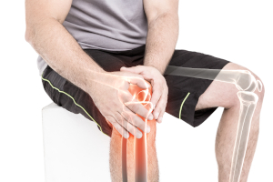
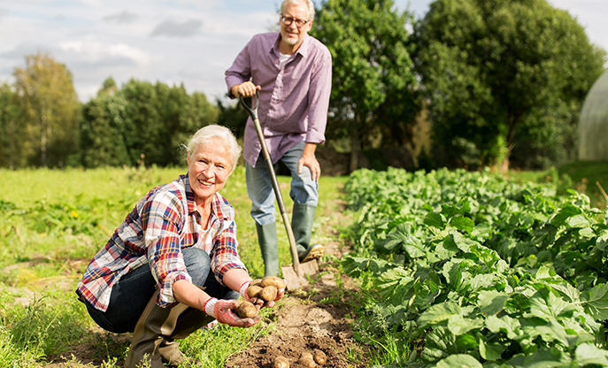

confort de mișcare redat
Sfârșitul erei durerii articulațiilor și coloanei vertebrale!
Tratamentul inovator al profesorului român, ameliorează
imediat durerea și redă
niște articulații și o coloană vertebrală 100% eficiente, în 28
de zile

Oare noul tratament distruge afacerea producătorilor de analgezice
și benzi magnetice pentru articulațiile dureroase? Specialiști
remarcabili din domeniul reumatologiei, neurologiei și
fizioterapiei nu au îndoieli, că da. Împreună cu crearea formulei
naturale macro-moleculare de către român, a intervenit mult
așteptata descoperiri din lupta pentru niște articulații și
coloană vertebrală eficiente.
Deja peste 14 mii de utilizatori ai tratamentului au eliminat
durerea și și-au recuperat eficiența deplină a articulațiilor și
coloanei vertebrale în 28 de zile. Ca efect au încetat să se mai
otrăvească cu analgezice, să cheltuie o avere pe agenții
ineficienți și terapii, sau să stea la cozile pentru doctori și să
ceară orice fel de ajutor. Cum este posibil?
Profesorul Ilie Rus (specialist în biologia moleculară) a decis să-și vindece mama de artroza progresivă - a vrut s-o elibereze de la durerea cronică, rigiditatea și scârțâitul articulațiilor și să-i restabilească mobilitatea completă. Acesta a fost începutul unei revoluții în domeniul reumatologiei! Profesorul, după un an de cercetare avansată de laborator, a dezvoltat formula macro-moleculară naturală, sigură și ușor de folosit, care elimină imediat durerea și reconstruiește articulațiile și coloana vertebrală, eliberând de rigiditate inflamație, umflături și degenerări. Ca urmare, aceasta restabilește capacitatea fizică completă în 28 de zile.
Revistele medicale profesionale au salutat deja acest tratament ca „realizarea de pionierat din reumatologie”, iar profesorul pentru realizările sale a obținut nominalizarea pentru Premii Internationale. Mulțumită acțiunii formulei sale, chiar și persoanele cu cele grele și cele mai îndelungate degenerări, pot să își reconstruiască articulațiile și coloana vertebrală, să își recupereze aptitudinea fizică deplină și să se elibereze de analgezicele care distrug ficatul.
"Modalitățile anterioare cunoscute pentru articulații și coloană vertebrală sunt o pierdere de timp și bani!" Care sunt motivele pentru a gândi așa?
"Aceste cuvinte confirmă deja peste 14 mii de utilizatori mulțumiți de formula macro-moleculară pentru reconstruirea articulațiilor și a coloanei vertebrale, care au scăpat deja de durere și au recâștigat eficiența de 100%. De aceea am decis să aruncăm o privire sub microscop asupra metodelor cunoscute pentru articulații și coloana vertebrală. Mai precis, a verifica care sunt defectele lor și cu ce trebuie să se confrunte zilnic persoanele care utilizează mijloacele pentru ameliorarea durerii și presupusa "întărire a articulațiilor și coloanei vertebrale". Iată concluziile:
-
Exercițiile doar aprofundează problema
Există numeroase seturi de exerciții pentru presupusa "întărire a articulațiilor și coloanei vertebrale", care ar trebui să fie efectuate în fiecare zi, timp de câteva zeci de minute. Însă, aceste exerciții sunt de obicei foarte dureroase. Nu fiecare are putere și timp să se dedice exercițiilor de forță de zi cu zi. Ce este mai rău, o mică greșeală în timpul exercițiilor poate duce la degenerarea severă a articulațiilor și coloanei vertebrale, fapt ce poate duce chiar la accidentări.
-
Mijloacele analgezice funcționează o vreme și otrăvesc organismul
Tabletele care calmează durerea funcționează până la 3 ore. Pentru a stopa durerea cronică, trebuie să înghiți peste zece tablete într-o zi. La rândul lor, tabletele pentru "întărirea articulațiilor și a coloanei vertebrale" conțin ingrediente artificiale, achiziționate masiv la cel mai ieftin cost. Înghițirea acestor chimicale este o acțiune complet împotriva naturii - aceste ingrediente sunt artificiale, astfel încât corpul uman nu le absoarbe și nu le folosește pentru a regenera cartilajul. Acestea provoacă o listă nesfârșită de efecte secundare, printre altele ulcer gastroduodenal, tulburări de auz sau disfuncții renale. Se poate lua o tabletă cu speranța ameliorării durerii, dar în schimb, suferi de sute de ori mai mult - este absurd și evită scopul în sine.
-
Benzile magnetice sunt un placebo obșnuit
Benzile magnetice sunt o invenție din industria farmaceutică, care servesc câștigului ușor pe oamenii disperați din cauza ineficienței articulațiilor și coloanei vertebrale. Aceste produse nu influențează în nici un mod lupta cu durerea, pentru că nu sunt în stare să intre în cartilaj. Acțiunea acestor obiecte se limitează doar la încălzirea locurilor atacate de problemă. Încălzirea aceasta duce însă la extinderea capilarelor și pentru o perioadă lungă, doar aprofundează afecțiunile dureroase și permite inflamațiilor sau degenerărilor să se dezvolte mai departe. Dese ori de asemenea acționează agresiv asupra pielii, provocând reacții alergice puternice, iritații și erupții cutante.
-
Este o risipă de timp prețios și bani grei
Există vreun sens de a pierde banii câștigați din greu pentru agenții chimici, care nu doar că au un efect ușor și pe termen scurt, dar sunt otrăvitori și distrug organismul? Bineînțeles că nu. La rândul lor, exercițiile efectuate individual sau cu participarea unui fizioterapeut absorb mult timp și nu garantează îmbunătățire. Mai rău, acestea amenință cu agravarea durerii.
De aceea, terapia macro-moleculară a prof. Rusescu este un progres real în lupta pentru o coloană vertebrală și articulații puternice
Tabletele oferă doar o alinare slabă și temporară, distrug sistemul digestiv și otrăvesc organismul. După care benzile magnetice servesc doar câștigului industriei farmaceutice. Toate acestea sug din om sănătatea și banii grei. În schimb tratamentul prof. Rusescu se bazează numai pe ingrediente naturale și nu provoacă nici un efect advers. În schimb combate durerea și zi după zi reconstruiește cartilajul articular, redând eficiența mișcării fără rigiditate, pocnire și durere. Această formulă inovatoare este combinația celor mai noi realizări din domeniul biologiei moleculare, neurologiei și reumatologiei.
Ingredientele conținutele în aceasta sunt pe deplin naturale și sigure pentru sănătate. Însă mulțumită intezei chimice corespunzătoare, au proprietăți de regenerare cu 300% mai puternice. Utilizarea zilnică a acestor substanțe redau aptitudinea mișcării chiar și persoanelor cu degenerări serioase și de mulți ani, cu inflamații sau complicații după accidentări.
Acum poate oricine să își recupereze articulații 100% eficiente și puternice
Tratamentul este disponibil deja în vânzarea cu amănuntul sub denumirea de . Formula macro-moleculară are forma hidrogelului activ, care instantaneu este absorbit și elimină imediat durerea, edemurile și rigiditatea atât articulară, cât și a coloanei vertebrale. Spre deosebire de tabletele chimice, utilizarea tratamentului macro-molecular este naturală și pe deplin sigură pentru organism, fapt dovedit de cercetările suplimentare ale centrului german de cercetare din Dormund.
Aceste cercetări au indicat de asemenea, că tratamentul are o eficacitate de peste 98%.Mulțumită acesteia, persoanele cu vârste între 21-93 de ani, în numai 28 de zile au obținut efecte spectaculoase în combaterea durerii, eliminarea edemurilor, rigidității și contracararea oricăror degenerări, inflamații sau complicații de după leziunile articulare și ale coloanei vertebrale. Indiferent de vârstă sau cauza și perioada de apariție a problemelor.
Eficacitate confirmată
Acești oameni chiar au calmat cea mai puternică durere la nivelul articulațiilor și a coloanei vertebrale imediat după ce au folosit formula macro-moleculară a prof. Rusescu. Mulțumită acestui fapt, ei au început în cele din urmă să se miște ușor și să efectueze toate activitățile, care până acum au fost împiedicate de durere.
În următoarele zile de tratament, cercetații au intrat în faza reconstrucției intensive a țesutului cartilaginos și al fluidului sinovial, mulțumită acesteia scăpând de rigiditate, amorțeală și pocniturile oaselor. După care și-au întărit articulațiile, tendoanele și mușchii cu 87% și au eliminat edemurile împreună cu inflamațiile. Articulațiile și coloana vertebrală au fost supuse reconstrucției automate timp de 24 de ore pe zi.
Ca efect, degenerările articulațiilor și ale coloanei vertebrale au fost eliminate, iar cercetații scăpând de durere au obținut în medie de 3 ori mai multă energie. Dar asta nu este totul. După 28 de zile de tratament, participanții în cercetări au recunoscut în unanimitate, că și-au recuperat aptitudinea de mișcare din tinerețe. Astăzi pot merge normal, să alerge și să danseze fără durere sau să se îngrijoreze de „pocniturile” oaselor, ca la vârsta de 20-25 de ani!
Efectele documentate ale tratamentului vorbesc de la sine:
ameliorarea rigidității, amorțelii și pocnirii oaselor
eliminarea edemurilor și a inflamațiilor
recuperarea aptitudinii de mișcare de 100%
săptămâna 1
săptămâna 2
săptămâna 3
săptămâna 4
Săptămâna 1. – calmarea imediată a durerii; redarea confortului de mișcare
Săptămâna 2. – reconstrucția intensivă a cartilajului și fluidului sinovial; ameliorarea rigidității, amorțelii și pocnirii oaselor
Săptămâna 3. – întărirea articulațiilor, tendoanelor și mușchilor cu 87%; eliminarea edemurilor și inflamațiilor
Săptămâna 4. – eliminarea degenerărilor articulare și ale coloanei vertebrale; recuperarea aptitudinii de mișcare de 100%
Doamna Ilinca (67 de ani) și domnul Ionel (68 de ani) Socaciu din Ploiești, sunt unele dintre primele persoane din România care au utilizat :
Doamna Ilinca: „Împreună cu soțul conducem de ani o gospodărie ecologică, care reprezintă întreaga noastră viață. Acum a ieșit moda pentru produsele ecologice și este și mai multă muncă. Ne-am bucurat până în momentul în care articulațiile au început să cedeze. Eu aveam mâinile și coatele dureroase și rigide, iar pe lângă acestea coloana vertebrală îmi pocnea. Soțul avea probleme cu genunchii și șoldul. Nici noi nu doream să renunțăm la pământ pentru niște dureri. La timp însă am aflat despre .Dacă nu am fi profitat – ar fi fost pur și simplu greșeala vieții! Ca niște bătrâni infirmi ne simțeam amândoi, iar 4 săptămâni au fost suficiente și acum ne merge mai repede pe câmp cu munca decât nepoților! Soțul merge cu bicicleta după cumpărături, iar eu cu croșetez cu plăcere. Nici o durere, pocnitură, amorțeală și nici umflătură nu mai apare. La nunta fiicei, am plecat ultimii de pe ringul de dans. Poate fi mai frumos? Multe mulțumiri.”
De ce să te condamni la infirmitate, dacă se poate natural,sigur și eficientsă scapi de durere și să îți recuperezi aptitudinea de 100%?
Vestea bună este că poate fi obținut pentru participarea în cadrul clubului de reduceri cu reducere de 50%. Oferta specială este valabilă până la sfarsitul acestei saptamani. Tratamentul poate fi obținut prin intermediul paginii de mai jos.


Comentarii
Citește comentariile despre articolul "Sfârșitul erei durerii articulațiilor și a coloanei vertebrale! Tratamentul inovator...
TomaC.
și se pune că românii nu au succes pe nivel mondial, excepționala realizare de nivelul lui palade. Bravo pentru compatriotul nostru
corina
eu am utilizat acest hidrogel, lam primit pentru participarea in clubul de reduceri si a costat foarte putin, iar genunchi nu dor si a incetat sa mai pocneasca la miscare! ma simt ca noua. recomand din toata inima
Miruna
de asemenea, am folosit tratamentul pentru coloana vertebrală și încheieturile cervicale, mi-a trecut durerea imediat - după o jumătate de an de masaje și tratamente speciale care nu au funcționat !!!!!!! nu pierdeti timpul, aplicati doar formula profesorului
Sofia
uau. Tocmai stateam pe portaluri pentru a cauta ceva bun pentru inflamatii si edemurile articulare. Deja urmatorul portal unde descriu acest tratament, trebuie sa am asta:)
Mihai
stimatilor. Voi povesti, pentru ca m am chinuit cu genunchii durerosi aproape 6 ani. Anii de munca de la fabrica in picioare, si au facut treaba. Pe diferiti agenti, benzi pentru genunchi si alte minuni am dat in total 5 mii de lei, ceea ce si asa nu este mult, desi ca pentru pensia unui ionescu obisnuit intelegeti foarte bine si singuri. Si nici o pastila nu ajuta, numai imi faceau probleme gastrice. La fel si cu benzile magnetice, ademenirea oamenilor sa dea bani grei si nimic! Dar acum trei saptamani am primit de la fiica acest preparat si singur am ramas uimit. Am uns o data si durerea a trecut. Boala nu mai este si imi misc genunchii usor. Pe trotineta nepoatei m am dat ieri, ce am mai ras. nu stiu daca functioneaza pentru toti, pe mine a functionat! merita sa incercati
Andrei
Am aplicat deja și am beneficiat de acest lucru foarte mult. l-am folosit timp de numai două săptămâni, dar am uitat deja de durere și nu cred că se va întoarce. În cele din urmă, pot trăi ca o persoană normală
maria
intrand pe aceasta pagina nu ma asteptam sa citesc astfel de minuni. Trebuie sa am acest tratament in acest caz. Nu mai sufar durerea ingrozitoare de sold si genunchi. In sfarsit scap de ea-exceptional!
Victoria
Folosesc hidrogelul de o saptamana si ma simpt exceptional, o alinare de nedescris... nu am nici un efect advers si nimic de genul... pentru mine asadar este cel mai bun lucru... atatia bani am dat pe diferite masaje si tratamente, ca nimic altceva nu voi mai incerca....
Mihail
Am profitat de clubul de reduceri, pentru a primi . Vreau să scap de durerea coloanei vertebrale, a picioarelor și coatelor, pentru că voi avea o sarcină importantă, adică voi deveni bunic, așadar trebuie să fiu eficient! Efectele pentru mine sunt fenomenale, folosind doar de două ori iar durerea dispărând după prima aplicare, abia aștept finalul tratamentului
Ana
Mama mea are deja o varsta inaintata asa ca am o intrebare pentru dumneavoastră cei ce ati utilizat, cati ani aveti, daca sunt aici persoane cu o varsta de peste 80 de ani sau au cunostiinte/din familie? Vreau sa stiu daca e vreo sansa pentru mama. Abia se misca, are dureri reumatice si imi pare foarte rau pentru ea si ma ingrijorez. Rog raspuns. Bianca
Damian
@Ana de cand am aflat de acest tratament am inceput sa o folosesc pentru coloana, ma ajutat asa ca lam dat tatalui, si are 93 ani asa ca se ca abia merge. Si asa de bine i sa facut ca a sia pus halatul si palaria lui mama si a inceput sa danseze :D asa ca recomand si mamei tale
Ana
@Damian hehe :) extraordinar, sanatate pentru tata. iti multumesc mult pentru raspuns. in acest caz ii daruiesc si mamei acest [email protected] hehe :) extraordinar, sanatate pentru tata. iti multumesc mult pentru raspuns. in acest caz ii daruiesc si mamei acest tratament
Andreea
de asemenea am folosit pentru umar si sold dupa accidentare si a trecut imediat :) salutari si recomand
eva
cu placere as utiliza dintr-o data, dar ma tem ca nu poate functiona. Am dat deja destul de mult pe modurile ineficiente
eva
a!! tocmai am citit ca pentru acest tratament se ofera garantia satisfactiei triple, in acest caz nu sunt temeri. Ma voi convinge pe propria piele, sper sa ajute :)
Fane
Colegul meu a folosit acest gel si acum ceva timp mi a recomandat. Am intrat in clubul asta si am primit pachetul in 3 zile (desi nu am prin aceasta reducere, pacat). Pentru moment rezultatele sunt mai bune decat ma asteptam – durerea a trecut, umflaturile au disparut si eu cu fiecare zi ma simt mai bine! Abia astept saptamana 3 si 4.
Marius
tocmai astept livrarea cu tratamentul, in curand voi scrie de efecte